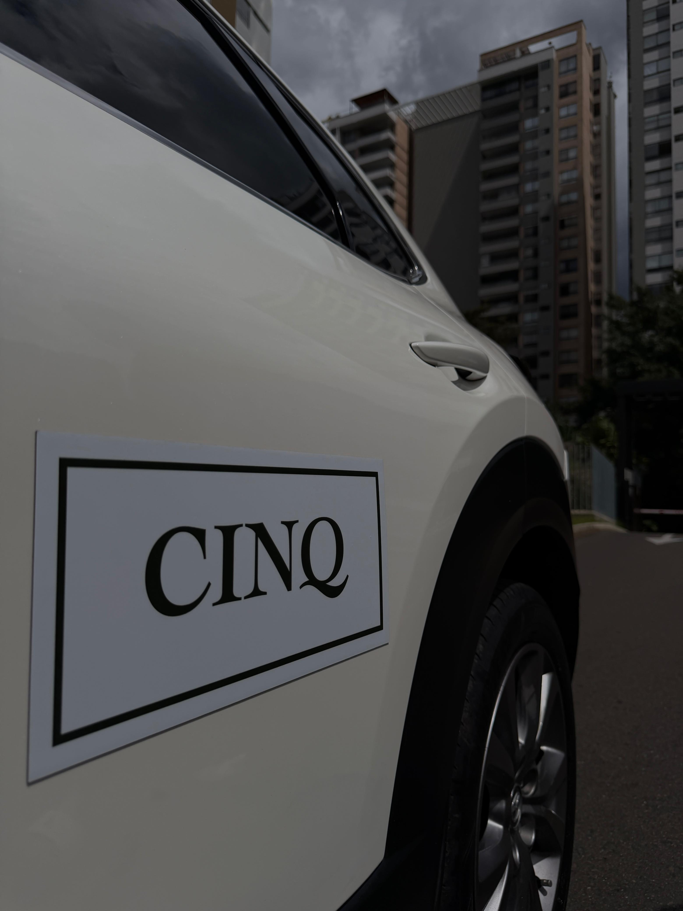

Conectando oportunidades
La diferencia está en quién es capaz de reconocerlas.

Filosofía
No vemos únicamente activos, vemos oportunidades. Cada propiedad, cada vehículo y cada inversión tienen un contexto diferente.
Por eso creemos que toda buena decisión comienza con información.
Portafolio
Cómo trabajamos
Cada propiedad o vehículo se revisa contra un estándar de fotografía, documentación y presentación antes de considerarse.
Confirmamos propietario, documentos al día y consistencia entre lo declarado y lo mostrado.
Presentamos la oportunidad a quienes buscan exactamente eso, sin intermediarios de más, sin ruido.
El mercado
Así se comportó el mercado donde trabajamos durante 2025. No son proyecciones ni estimaciones propias: son las cifras que publica el gremio inmobiliario de la región.
Valorización real anual del suelo urbanizado
Medellín y Área Metropolitana, 2025
Valorización real anual del suelo residencial en Medellín
Estrato medio, el más dinámico: 10,1 %
Colocaciones de arriendo de vivienda usada, estratos 4 a 6
Valle de Aburrá, 2025
Menos oferta de arriendo disponible en el mercado
Con los cánones al alza: +6,5 %
Fuente: La Lonja de Propiedad Raíz de Medellín y Antioquia, estudio de valorización del suelo y balance del sector inmobiliario 2025. Cifras de referencia del mercado, sujetas a sus propias condiciones.
"Detrás de cada activo existe una historia, un objetivo y una oportunidad de crecimiento."
Manual de marca de CINQOfrece tu propiedad o vehículo
Evaluamos cada solicitud con el mismo estándar de calidad, documentación y presentación que exigimos siempre. No todas son aceptadas.
Cuéntanos